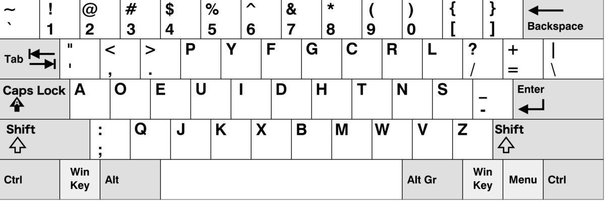

（追記：Karabiner-Elements JIS用Programmer Dvorakはこちら）
何番煎じなのかわからないけど、なかなかちょうどいいのがネットで見つからなかったので、US配列用のものをいじって自作。CMD-QwertyなのでCommandキーのショートカットはQWERTYとして動く。
コードはGitHub Gistにもアップした。 dvorak-cmdqwerty-forjis.json · GitHub
以下の配列をJISで打てるようにしたもので、唯一違うのはバックスラッシュを「む」のキーに割り当てた点。Macには漢字キーがないので、そこだけは再割り当てする必要があった。

Dvorakは毎日少しずつだけ練習していて、かな配列ほど必要性がないのでまだそれほど上達していないけれど、手に馴染む感じがしたらQWERTYと置き換えていきたいなと思う。そのときはVimをどうしようか悩むけど、しばらくはQWERTYとスイッチしながらしか使わなそうなので、そのときになったら考えよう。